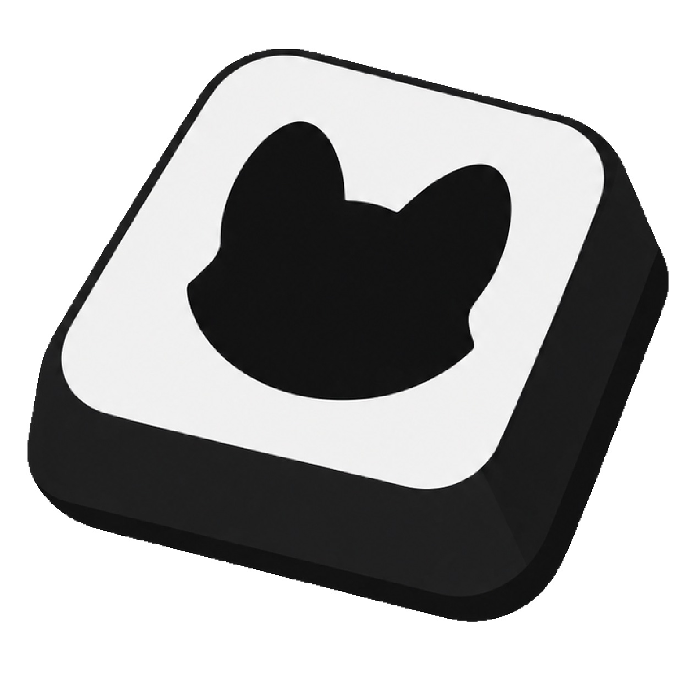

支持 Windows 10 和 Windows 11。
下载

PA Keystroke
Windows 10 / 11 64 位，免安装。
下载 PA-Keystroke.exe
版本 v1.0.01
大小 48.2 MB
更新 2026-09-29
查看全部版本
更新日志 v1.0.01
Changelog
特性优化
- 优化中英文混排字体显示。
- 优化预设列表显示、重命名体验和新建预设后的滚动定位。
- 优化自动识别模式下的预览、只读锁定和设备切换。
- 优化弹窗标题栏。
问题修复
- 修复文本描边重影和部分中英文混排问题。
- 修复左右 Shift、Ctrl、Alt 无法识别的问题。
- 修复 Win 键显示错误、控件高度异常和圆角不一致。
下载后直接运行，不写入固定安装目录。
启动时检查公开 Release，可在应用内更新。
安装步骤
三步开始使用。
- 1下载程序
下载
PA-Keystroke.exe。 - 2运行
双击程序，并按 Windows 提示允许管理员权限。
- 3打开 OBS 捕获
添加窗口捕获，选择
PA Keystroke Overlay。
当前版本未使用受信任的代码签名证书，Windows 可能显示“发布者未知”。请确认文件来自公开 Release 仓库。